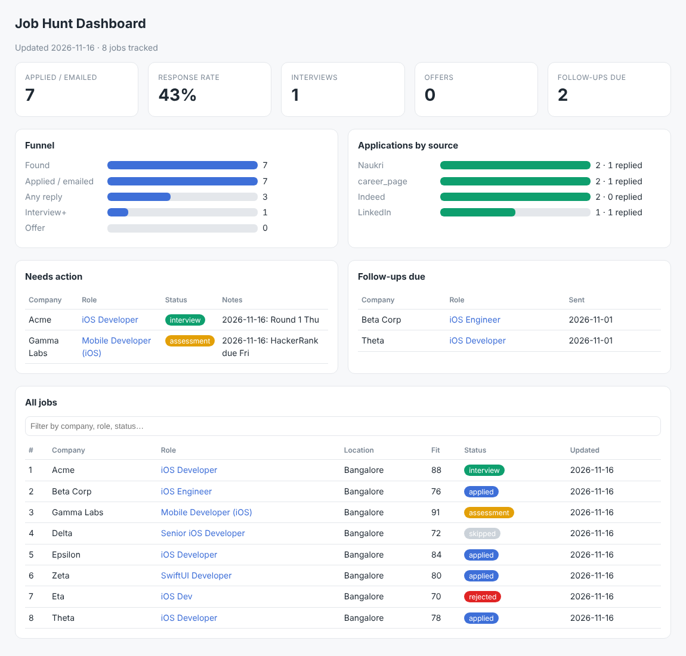

job-hunter is a Claude plugin that watches your target companies, tailors an ATS-proof resume to every job description, prepares applications and HR emails, and sends them one by one after a single daily approval.
One daily loop. Your time goes into a single review step.
Hourly watchlist on Greenhouse, Lever, Ashby, Workable and SmartRecruiters boards — plus LinkedIn, Naukri, Bayt and career pages. Duplicates, ghost jobs and scams filtered out.
A resume rewritten for each job description from your master profile. Keyword coverage reported. Missing skills are listed as gaps — never invented.
Every PDF is read back like an applicant-tracking system would, and fact-checked against your profile before it goes anywhere.
One table: company, role, fit, method, resume. Approve — Claude submits and emails one at a time, minutes apart, within your daily cap.
Replies sorted (tests, interviews, rejections, offers), drafts ready, mock interviews with scores, referral asks, salary negotiation.
Dashboard and weekly insights: which sources, resume layouts and email styles get replies — and what skills to learn next.
The same sample resume, read back by the built-in ATS self-test.
✗ reading order sections scrambled (sidebar) ✗ icons / glyphs 18 odd glyphs ~ JD keywords 5/7 present
✓ name, email, phone ✓ titles, companies, dates in order ✓ 4/4 bullets intact · 1 page

Most auto-apply bots optimise for volume. job-hunter optimises for replies — without risking your accounts or your reputation.
| Typical auto-apply bot | job-hunter | |
|---|---|---|
| Resume per job | Generic or keyword-stuffed | Tailored, fact-checked, ATS-tested |
| Speed to new jobs | Daily board scrape | Hourly company watchlist |
| Sending | Hundreds blindly | You approve the list · one by one · daily cap |
| Recruiter emails | Guessed / scraped addresses | Official contacts only · 1 follow-up |
| India & Gulf | US-centric | Region packs: India, Gulf, EU/UK, US |
| Price | $20–$400 / month | Free & open source |
Claude Code:
/plugin marketplace add <owner>/job-hunter /plugin install job-hunter@job-hunter-marketplace
Claude app: download job-hunter.plugin from the latest release and open it. Then say “set up job hunter” and attach your resume.
Recommended connections: email (Gmail/Outlook), Claude in Chrome, calendar.
Install the plugin (or just the quick-tailor skill), then paste a job description and attach your resume:
tailor my resume to this job: <paste the job description>
You get an ATS-friendly resume, a before/after keyword match score, honest gaps and an optional cover letter — in about a minute.
Response rates are shared anonymously by users (opt-in, counts only) and published on the results page. Using job-hunter? Ask Claude: “share my job-hunter stats”.
No. It prepares everything, shows you one table, and only submits or sends what you approve — one at a time, within the daily limit you set.
LinkedIn prohibits automation of its site. job-hunter reads LinkedIn in your own browser at human pace and leaves the final click to you; for speed it relies on public company job APIs instead.
Never. Every number, skill, employer and certification is checked against your master profile. Missing requirements are reported as gaps, with a plan to close them.
In a local job-hunt/ folder on your machine. Nothing is shared unless you choose to submit anonymous stats.
Claude (Claude Code or the Claude app with plugins), Python 3.9+ for the helper scripts, and optionally email/browser/calendar connections.